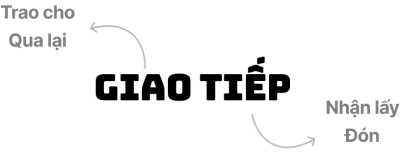
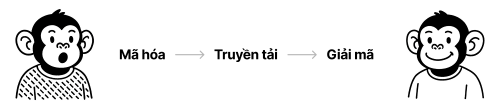
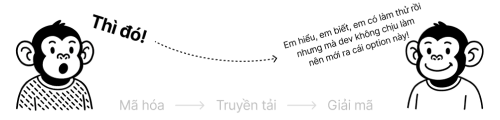
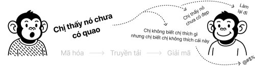
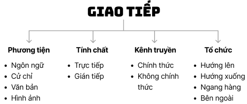

Bài viết dành cho những bạn designer đang cảm thấy làm việc cứ hay bị trục trặc trong việc nói chuyện với mọi người...
Giao tiếp là gì?

Từ "giao tiếp" trong tiếng Việt là một từ Hán-Việt được kết hợp từ 2 hành động:
- Giao: mang các nghĩa như "trao cho", "kết hợp", "cắt nhau", "qua lại". Chữ này gợi lên hình ảnh sự tương tác, sự đan xen và sự chuyển giao theo hai chiều.
- Tiếp: Mang các nghĩa như "nhận lấy", "nối liền", "tiếp xúc", "đón". Chữ này gợi lên hành động đón nhận, kết nối và duy trì sự liền mạch.
Khi kết hợp lại, “giao tiếp” mang nghĩa đen là "tiếp xúc với nhau", "qua lại với nhau". Trong cuốn Từ điển tiếng Việt của giáo sư Hoàng Phê, “giao tiếp” là “trao đổi, tiếp xúc với nhau”. Ý nghĩa cốt lõi này không tập trung vào nội dung được trao đổi mà vào chính hành động, tạo ra sự kết nối giữa 2 hay nhiều chủ thể.
Đây là một điểm khác biệt căn bản khi so sánh với thuật ngữ "communication" trong tiếng Anh. Từ "communication" có gốc từ tiếng Latin là ”commūnicāre”, nghĩa là "làm thành của chung". Nếu “commūnicāre” nhấn mạnh việc biến một thông điệp thành tài sản chung của người gửi và người nhận, thì “giao tiếp” lại nhấn mạnh hành động tạo ra và duy trì một mối liên hệ, một kênh tương tác.
Giao tiếp hoạt động như thế nào?
Có thể hệ thống hóa một cách đơn giản nhất cách hoạt động của giao tiếp như hình sau:

Người gửi tin sẽ mã hóa thông tin, sau đó truyền tải theo một phương thức nào đó đến người nhận. Người nhận giải mã thông tin và tiếp nhận. Quy trình rất ư là này nọ, đọc cứ tưởng như đang nói về quy trình truyền dữ liệu thông tin trên máy tính với nhau. Nhưng bản chất của việc giao tiếp ngoài đời thật hay trên máy tính đều như nhau. Chỉ là bạn đã quen với việc mã hóa và giải mã trong giao tiếp như việc hít thở, nên bạn không nhận ra thôi. Dưới đây sẽ là 2 ví dụ để bạn có thể thấy:
Ví dụ 1: Đây là câu chuyện được phóng tác dựa trên một câu chuyện có thật như sau. Hôm đó mình review design của nhân viên mình, mình feedback: “Ủa em! Sao cái design ở đây không làm cho nó đồng nhất với bên tính năng kia đi!”, em nó trả lời lại: “THÌ ĐÓ!!!”

Sau khi mình giải mã được từ “thì đó” thì mình thấy nó hay vl luôn mấy bạn ạ, nó vừa thể hiện sự đồng cảm với người feedback, vừa thể hiện sự bất lực trước vấn đề gặp phải, còn vừa mang một chút phẫn nộ với tình trạng hiện tại nữa...
Ví dụ 2: Một câu nói mã hóa huyền thoại của các bạn làm trong agency mà giải mã có tới hàng trăm đáp án…

Trường hợp này thì nên kiên nhẫn và từ tốn tâm sự với chị kỹ hơn, vì chị không biết gì về design thì chị mới kiếm designer, chứ chị mô tả được thì chị đã không kiếm mình rồi. Đẹp nhất là nhờ quyền trợ giúp của người thân là sếp mình vào cuộc chơi này nhé. Chứ đừng phản hồi lại “Thì đó!” với chị nha.
Nãy giờ đã tập trung vào phần mã hóa và giải mã rồi, vậy còn bước giữa trong truyền tải là gì? Chúng ta có thể bóc tách giai đoạn giữa này thành các yếu tố như sau:

Phương tiện:
- Ngôn ngữ: Dùng lời nói để giao tiếp.
- Cử chỉ: Dùng hình thể (ví dụ: giơ tay xin phát biểu, lắc đầu từ chối)
- Văn bản: Tài liệu công việc hoặc, đơn giản là, bài viết này.
- Hình ảnh: Bản vẽ nháp, wireframe, UI, hình ảnh luồng người dùng...
Tính chất:
- Trực tiếp: Trao đổi trực tiếp, thuyết trình, gọi điện… đơn giản là truyền và nhận thông tin ngay lập tức.
- Gián tiếp: Đọc feedback trên Figma, xem lại video record buổi thuyết trình... (có thể tham khảo từ “Asynchronous work”)
Kênh truyền:
- Chính thức: Một cuộc họp, một email, một văn bản...
- Không chính thức: Một cuộc trò chuyện ngay tại quầy nước lọc ở công ty.
Tổ chức:
- Hướng lên: Nhân viên đề bạt một ý kiến nào đó lên thượng tầng.
- Hướng xuống: Sếp yêu cầu nhân viên làm một chiếc task nào đó.
- Ngang hàng: Nhờ vả đồng nghiệp gánh phụ việc gì đó.
- Bên ngoài: Đại diện công ty đi nói chuyện với đối tác...
Giao tiếp không chỉ vỏn vẹn trong việc nói chuyện; giao tiếp là việc mã hóa thông tin và giải mã dựa trên rất nhiều yếu tố truyền tải khác nhau, ví dụ như gửi email, viết tài liệu thiết kế, vẽ luồng người dùng. Ví dụ, trong một cuộc họp mà ai cũng đang giành nhau nói, bạn không thể dùng ngôn ngữ lúc đó để tranh lại thì dùng cử chỉ, giơ tay xin phát biểu sẽ là một cách giao tiếp rất gây được sự chú ý lúc đó…